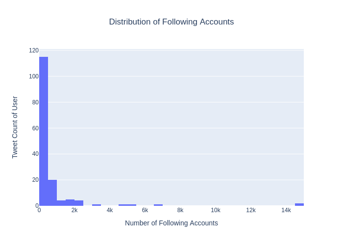

Hi. We are Group 49.
And this is our project, Risa, the "Rebel Sympathizer", which aims to analyze tweets that redtag Risa Hontiveros.
Data Science Team
- Naomi Amparo, WFX
- France Calma, WFW
- Barnett Gaano, WFW
And this is our project, Risa, the "Rebel Sympathizer", which aims to analyze tweets that redtag Risa Hontiveros.
Data Science Team
What questions do we intend to answer and how do we plan to go about it?
How much engagement do tweets that red tag Risa garner?
Tweets that red tag Risa have the highest engagement relative to other unrelated tweets made by the same Twitter user.
Tweets that red tag Risa do not have the highest engagement relative to unrelated tweets made by the same Twitter user.
Analyze engagement (views, likes, retweets, quote retweets) of red tagging tweets compared to engagement of unrelated tweets.
This is how we did it.
In order to derive significant insights from the data, we first had to clean the dataset. This is how we preprocessed our data.
To handle missing values, we first examined our dataset’s columns to determine which ones have null values.
In this case, optional columns e.g. Tweet Translated, Screenshot, Views, Rating, Remarks, Reviewer, and Review have null values for all rows. These columns prove to be insignificant to our analysis and so we dropped them.
Further, non-optional columns e.g. Account Bio, Location, and Account Bio URLs have high null values but we decided not to impute them as we wanted to investigate further/ these features are not significant to answering our problem statement, which aims to answer if Risa-related tweets garner the highest engagement relative to other unrelated tweets made by the same user.
To handle outliers, we tried to determine which columns have outliers, but we did not impute them because we wanted to investigate further the existence of these outliers.
Most numerical features e.g. Following, Followers, Likes, Replies, Retweets and Quote Tweets do not have a normal distribution.
They are mostly skewed to the left and all features have outliers as you can see in the histogram images below:
For instance, the Following column has a maximum value of 14522 as compared to its mean value of 636.532468. Who is this user?
The Follower column has a maximum value of 65409 as compared to its mean value of 3464.512987.
Interestingly, most likes (139 out of 154) have also only garnered 0 - 4 likes. The tweet with the most number of likes (299) stated the ff.: If the Maute group didn't commit rebellion or invasion, what's their crime Senator Risa Hontiveros? Trespassing?. This came from @srsasot who also has the highest follower count, 65409.
Whereas 136 out of 154 tweets have 0 replies, 130 tweets out of 154 tweets have 0 quote tweets, and 129 out of 154 retweets have 0 replies. The maximum number of quote tweets and retweets for a tweet are 14 and 111, respectively.
We standardized date and text formatting of select columns in the dataset. For instance, we converted the initial format of the Joined column from 2016-10-25 05:02:43+00:00 to the required MM/YY format. The same was done for the Date Posted column.
We also added a @ symbol to all entries under the Account Handle column.
Furthermore, we standardized numerical columns e.g. Following, Followers, Likes, Replies, Retweets and Quote Tweets. This allows the features to be easily comparable, to reduce impact of outliers, and to approximate a normal distribution, which can allow easier execution of statistical techniques such as linear regression, logistic regression, and hypothesis testing.
Lastly, we performed categorical data encoding on nominal columns e.g. Account Type, Tweet Type, and Content Type through dummy variables. This then creates a separate column for each possible value under each column i.e. when a tweet has a content type of rational, the tweet is tagged as a 1 under the Content Type_Rational column.
In this section, we performed text preprocessing techniques. We followed the ff. work flow:
From this list of cleaned tweets, we conducted tokenization and lemmatization and then inserted new columns in the dataframe named Tokenized Tweets and Lemmatized Tweets. We chose to lemmatize instead of stem as the former reduces words to their base form while taking into account the context and meaning of words.
Once the data was cleaned and preprocessed, it was time to visualize the data to figure out possible correlations and interesting points of analysis.
In dealing with time series data, we created the ff. line graphs:
This line graph shows the time series data of count of likes from 2008 to 2020. The date range represents the date that all tweet users joined Twitter. As shown, the highest spike in like count can be found from a tweet of a Twitter user that joined Twitter in 2017.
This line graph shows the like count of each tweet respective to the date that the tweet was posted by the user. The highest spike in like count can be seen in the early 2018, totaling to 10 likes for the specific tweet, after which all likes have maintained a like count of less than 2
This line graph shows the count of tweets respective to the date that the tweet was posted. As seen the highest spike is observed in early 2017 and another notable spike in the latter part of 2017. This means that most tweets were posted in early 2017 by the relevant Twitter users.
In dealing with categorical data, we created the ff. bar graphs:
This bar graph shows the count of tweets under each content type. As seen, transactional tweets have the highest count with 65, meaning that 65 out of 154 tweets are transactional. Following transactional tweets are emotional tweets with a count of 61, and lastly are rational tweets with a count of 28.

This bar graph shows the count of tweets per account type. As seen, 97 out of 154 tweets are made by anonymous users. This is followed by identified users with 35 tweets and lastly by media users with 22 users. Thus, 62.98% of the tweets are made by anonymous users.
This bar graph shows the count of tweets per tweet type. Interestingly enough, 88 out of 154 tweets contain URLs in them, while 54 only contain text. There are only 7 tweets that contain images and only 5 tweets that are replies to parent tweets. Most tweets containing URLs in them align with the fact that the most prevalent content type of the tweets is transactional as transactional tweets were tagged as such because they usually contained URLs.
This features a correlation matrix in which it displays how strong the correlation is between all possible permutations of pairs of features present in the dataframe. On the left hand side, you can see a color bar which indicates the strength of the correlation where a rating of 1.0 indicates a strong positive correlation between the two features while 0.0 indicates no correlation between the two features. It is expected that the diagonal values have a perfect 1.0 correlation as it shows the correlation of a feature to itself. However, select feature pairs have a nearly perfect positive correlation with a value of 0.98 such as that of the correlation value between Replies and Likes, Retweets and Likes, Likes and Replies. This is followed by a correlation value of 0.94 as seen between Quote Tweets and Likes and Quote Tweets and Retweets. Similarly, this is followed by a correlation value of 0.93 as seen between Retweets and Replies and Quote Tweets and Replies. Notably, two feature pairs that have no correlation at all are Following and Quote Tweets and Quote Tweets and Following.
This graph shows possible clusters that were derived from the cleaned tweets after preprocessing. However in the graph, there does not appear to be a clear distinction between cluster rebellion and cluster emotions.
You can add more information about the team members here.